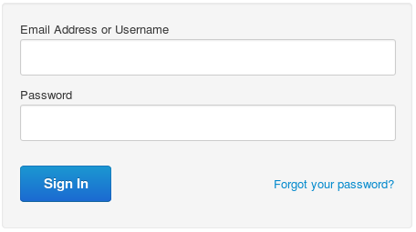

Disabling the reset password link in the Edge UI
Edge for Private Cloud v. 4.17.05
By default, the log in screen of the Edge UI includes a link that lets a user reset their password:

However, this link is not integrated with an external authentication server, so you can hide it by using the following procedure:
- Open the ui.properties file in an editor. If the file does not exist, create it:
> vi /<inst_root>/apigee/customer/application/ui.properties
- Set the conf_apigee_apigee.feature.disablepasswordreset token to true in ui.properties:
conf_apigee_apigee.feature.disablepasswordreset="true"
- Save your changes.
- Restart the Edge UI:
> /<inst_root>/apigee/apigee-service/bin/apigee-service edge-ui restart
To later re-enable this link, set the conf_apigee_apigee.feature.disablepasswordreset token to false and restart the Edge UI.